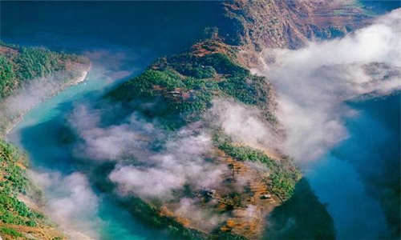

morly旅游网
螺髻山风景区位于四川省西昌市城南30公里处，总面积2400平方公里，其中主要景区面积1083平方公里，主峰海拔4359米。 螺髻山之名来源于与峨眉山的“姊妹”关系，“峨眉山似女人蚕蛾之眉，螺髻山似少女头上青螺状之发髻”。
螺髻山千峰叠翠，万派环宋，山势雄奇，胜境遍布，是得天独厚的自然风景区。
地形地貌
远望时烟霏林箐，岚光幻彩，苍蔼凌虚，高下混茫，有朝观暮开之感；近察则杂树生花，杜鹃似海，纷红似落，俪白参黄，呈争辉竞艳之趣。山间溶洞奇险岩穴深幽，丹岩翠，石峰峭立，有亮如明珠、号称天池的各色海子－－五彩湖，也有气势磅礴，飞流直觉泻的温泉瀑布。古籍中称螺髻山有72峰，36个天池，18项胜景，25坪，12佛洞，共108景。据1989年卫星遥感资料反映，其景观、景点数远不止于此，且其山脊高出4000米的山峰就有58座迂回缭绕于高山雾海之中，忽隐忽现，如苍龙遨游九天，其峰群之集中，规模之宏大，造型之奇异和离城市之近尚属罕见。
螺髻九十九里
西昌螺髻九十九里 邀享世界最大温泉瀑布 螺髻·九十九里位于凉山州首府西昌市以南39公里处，国家重点风景名胜区、国家4A级旅游景区。螺髻九十九里是螺髻山景点最为集中的区域，是螺髻山的核心景区，与邛海湿地、泸沽湖并称为凉山州三大必游景点。核心景区纵长九十九里，一里一个景，故名螺髻·九十九里。螺髻·九十九里由百瀑谷、螺髻第一峰、云端之上、原始森林四大景观群组成。百瀑谷自然天成、林木葱郁、花木俊秀、灵崖异石、飞瀑流泉，这里瀑布成群，且形态各异，如彩虹瀑布、孔雀瀑布等。螺髻九十九里温泉瀑布集观赏、养生、娱乐于一体，是螺髻山五绝之一。
古冰川遗迹
螺髻山是我国已知山地中罕见的保持完整的第四纪古冰川天然博物馆。古冰川遗迹中的角峰、刃脊、围谷、冰斗、冰蚀洼地、冰蚀冰碛湖、冰坎、冰阶、冰溜面、冰川刻槽、羊背石、盘谷、冰原石山、侧碛垅等古冰川风貌，具有很高的旅游、探险、科考等价值。其中冰蚀冰碛湖最为壮观，螺髻山冰蚀冰碛湖分布于海拔3650米以上的各期冰围和冰斗中。据不完全统计，终年积水的大小湖泊有50余下，多呈圆形或椭圆形，水面宽度多数为二三百米，湖水深度一般为七八米。冰蚀湖的湖底湖畔多为巨大的石条、石板平铺，部分为裸露基石。冰碛湖的湖底湖畔则以岩块、砂屑为主。部分湖泊有伸入的半岛或湖心岛。所有湖泊的湖周都保存有大量的冰蚀现象和各种冰碛物。湖水则由于基岩颜色、湖周植被或腐植质、湖中水草等的不同而显现翠蓝、棕红、棕黄、草绿、墨绿等颜色。具有考察意义和观光旅游的主要湖景有珍珠湖群、五彩湖群、叠翠湖、姐妹湖、干海子、黄龙潭、黑龙潭、温泉瀑布等。
螺髻山
螺髻山地势高耸，气候垂直分带明显，加上人迹罕至，独特封闭的地理环境，原始森林和各种珍稀动物以及野生花卉、菌类品种十分繁多。原始森林面积30余万亩，植物种类包括南亚热带植被，亚热带针叶林，亚热带常绿阔叶林、亚高山针叶林等共有180余科、2000余种，其中属国家第一批保护的珍稀植物就有30余种。野生花卉以杜鹃（彝语称“索玛花”）为最，计有30余种，每年3至7月，繁花似锦，铺天盖地。并且，不少杜鹃由于生长上千年而未受到砍伐，已长成须一至二人才能围住的大树，奇特无比。再加上有的杜鹃开花时能同时开出多种不同颜色的花朵，更是引人入胜，争芳斗艳，具有很高的观赏价值。
菌类方面，已知大型直菌150多种，80%可以食用、药用。有高等动物近400种，其中兽类60余种、鸟类252种、爬行类19种、两栖类26种，属珍稀和国家重点保护的，如短尾猴、小熊猫、金猫、林麝、斑羚、赤鹿、穿山甲、红腹角雉、白腹锦鸡、灰头鹦鹉、圆胧齿类蟾、宝兴树娃、大凉蝾螈、东坡墨鱼等就有30余种。螺髻山以保存丰富的动植物资源而成为我国少有的生物资源“基因库”，不但有很高的观赏价值，而且也是一个很重要的科学考察研究基地。
螺髻山历史上曾是我国较早的佛家圣地。自汉代开劈，唐代佛事已经盛行（鼎盛时期仅螺髻寺就养僧三千余人），建造了许多庙宇，现遗址尚存。唐末以后由于战乱和其他原因佛事日衰，于是有“隐去螺髻，始现峨眉”、“螺髻山开，峨眉山闭”之说。佛家称螺髻山为“紫微”。自清初至道咸年间，寺庙又逐渐兴起。据记载，仅螺髻山西麓就有曹峒派较大的庙宇两阁十三寺。螺髻山碧水幽谷，烟云飘渺，景观无穷，佛家称为仙境。
螺髻山上最富有神话色彩的古桥是富观桥。在此桥的龙门石上，有一幅惟妙惟肖的"桃花浪里鱼化石"的石雕。乌金桥坐落在镇西北郊，是当年苏州到同里的必经之路，也是古镇的重要入口。中元桥又称赌气桥,是一座梁式三孔石桥。
螺髻山气候差异大，“十里不同天”，原始森林保存完好，不仅存留着世界上某些频于绝灭的奇异生物，而且保存着完整的、目前世界上最大的原始古冰川刻槽遗址，有“西子浓汝，峨眉淡抹，螺髻天生”的美誉，万千景象吸引了不少游人去万途跋涉，登临浏览，以探寻其无穷奥妙。螺髻山定会同祖国其它名川大山一样放出异彩。
内容整理至网络，如有侵权，请联系我们！1255394075@qq.com